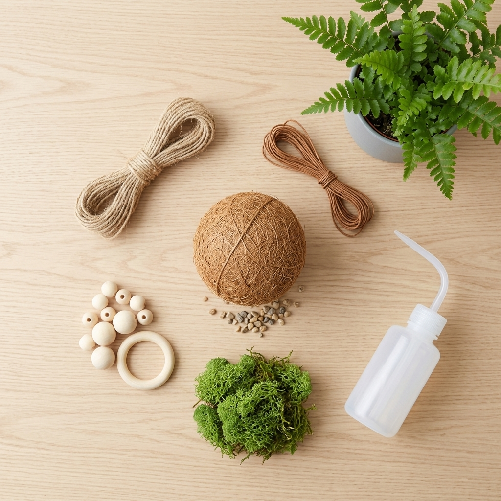

A complete DIY kit for the Japanese art of kokedama - everything you need to wrap your own moss-ball planter in an afternoon.

Twine, moss, husk, beads, and a watering bottle - no extra shopping needed.
Step-by-step instructions make the technique easy to follow.
You end up with a real, growing plant display, not just a craft.
This kit walks you through binding a plant's roots into a moss ball by hand, the traditional Japanese way.
It's a calming, screen-free project - and a thoughtful one to do together as a gift-making afternoon.
An afternoon away from screens, working with your hands.
Make one as a personal, handmade gift.
A finished kokedama makes a memorable thank-you.
Yes, bring your own small plant, succulent, or bulb to wrap.
Yes, the kit includes full step-by-step instructions.
Most people finish in under an hour.
A complete kokedama DIY kit with everything included - see current pricing and availability on Amazon.
Check Price on Amazon →